AN EVER-EXPANDING UNIVERSE
The world
of MMORP.
One character. A lot of enemies. An entire universe of games, places, and wonderfully questionable lore.
WELCOME TO THE ARCHIVE
There’s more to
the story.
What started as a Scratch game became a world of its own. Get to know the characters, revisit the games, and see where the lore goes.
32 articles to explore · one very unusual universe
PICK A STARTING POINT
Explore by category
FROM THE ARCHIVE
Meet the
Threnemy.
A spinning wheel. Waves of three. The third level of the original MMORP has a way of making an entrance.
Read the article
THE ORIGINAL GAME
Meet the classic ten
From the first Squelch to the infamous Tennemy.
THE ENCYCLOPEDIA
All articles
Browse the archive or use the search above to find something specific.
EXPLORE THE WIKI
Characters
The familiar faces, friends, and things trying to end your run.
 MMORPThe unmistakable face at the center of the series.
MMORPThe unmistakable face at the center of the series.
SquelchThe first enemy, and a very persistent one. PlopperAn iconic second-level enemy that drops from above.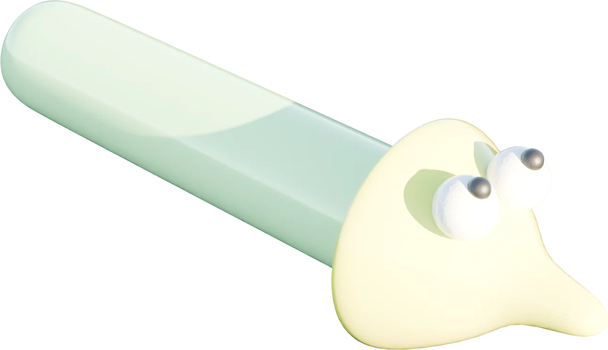
ThrenemyA wave of three, launched from a spinning wheel.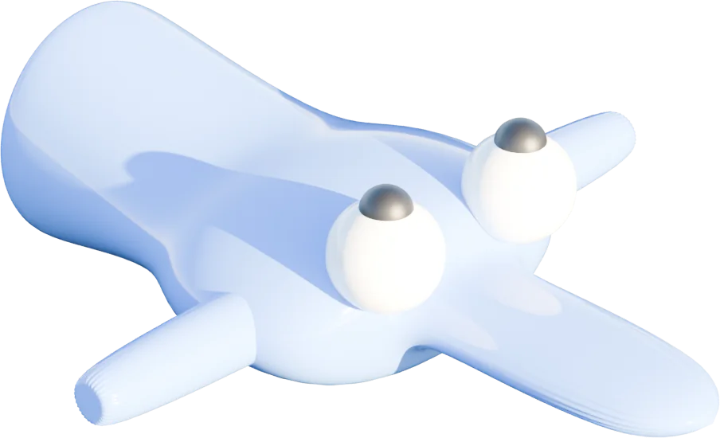
HelperA rare moment when running into an enemy is a good idea.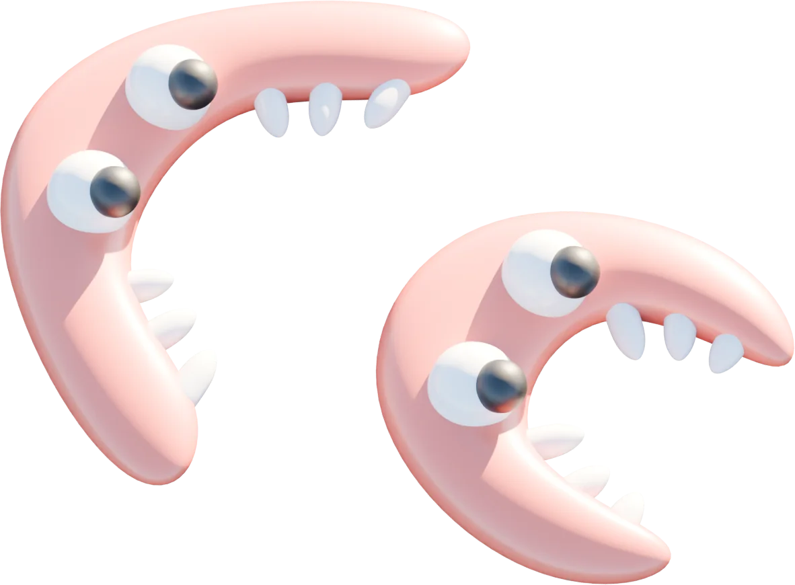
ChomperA patient pair with a very sudden bite.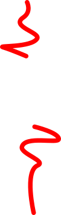
WallA five-damage obstacle and the end of many runs.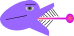
MomoA side-profile enemy hiding beyond the Wall.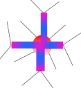
PricklyA fast-moving pursuer with a steady supply of projectiles. DerekA relaxed presence with a less relaxed projectile attack. TennemyThe original game’s formidable tenth and final enemy.
TennemyThe original game’s formidable tenth and final enemy.
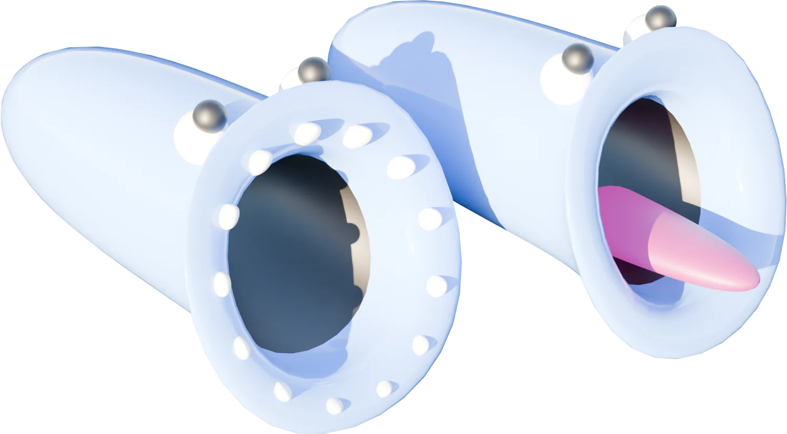
GulperA slow-moving MMORP 3D enemy with two distinct variants.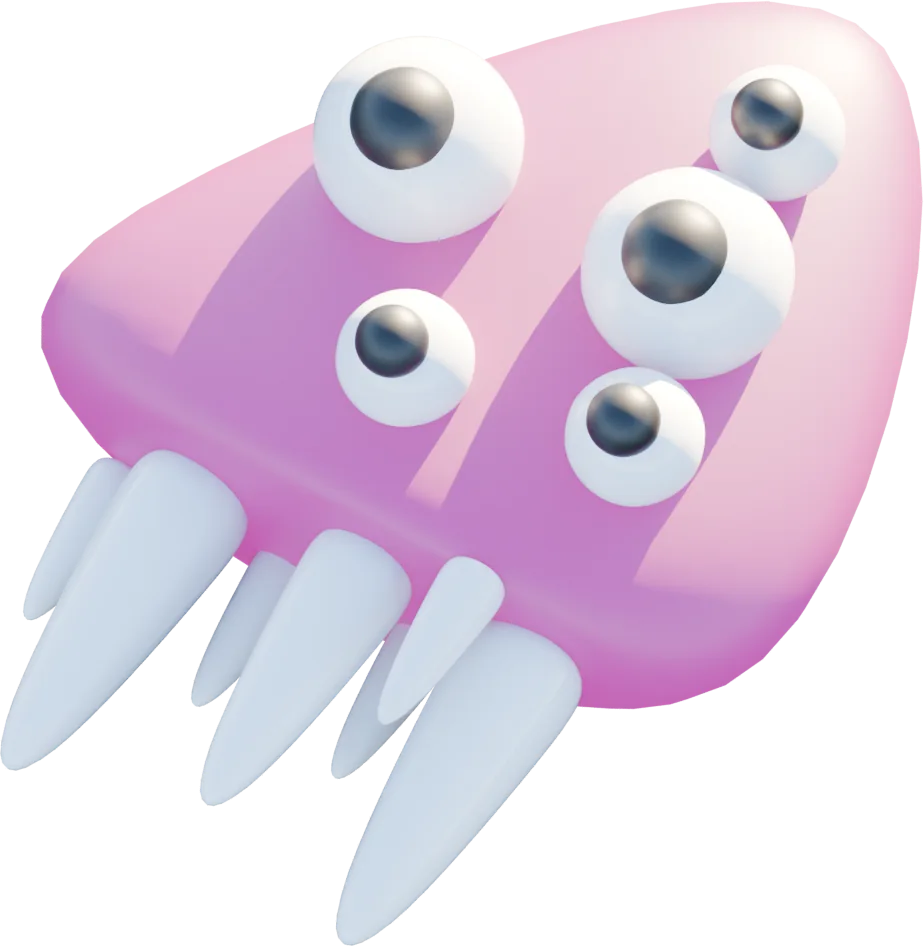
TootherA faster falling relative of the Plopper.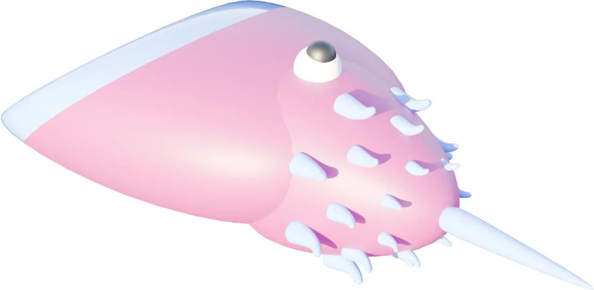
SpikerA fat, slow-moving creature that leaves Squelch eggs in its trail. SlimThe eccentric, dangerous inhabitant of the Derelict Camp.
SlimThe eccentric, dangerous inhabitant of the Derelict Camp.
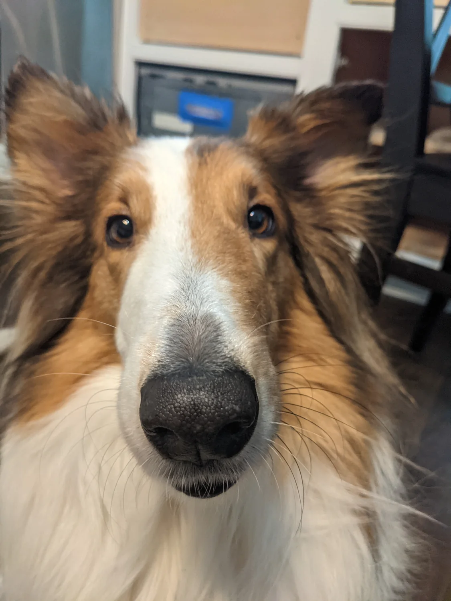
EdinaA beloved camp resident with a misleadingly evil name. John Harper TarletonMusician, MMORP 3D collaborator, and a figure in the lore.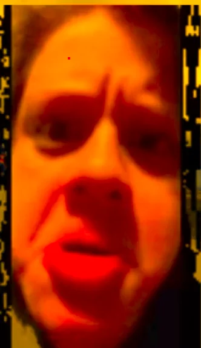
Orange OrangeTyler, a would-be meme with an urgent need for better Wi-Fi.EXPLORE THE WIKI
Games & mechanics
From the original Scratch game to the jump into three dimensions.
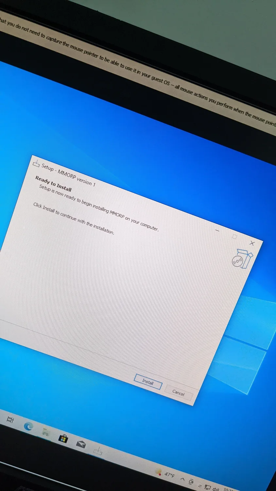
MMORP 2The unusual middle entry in the original trilogy. MMORP 3The unfinished Scratch sequel that introduced mouse movement.
MMORP 3The unfinished Scratch sequel that introduced mouse movement.
 MMORP 3DThe original’s bullet-hell chaos, rebuilt in Unreal Engine 5.
MMORP 3DThe original’s bullet-hell chaos, rebuilt in Unreal Engine 5.
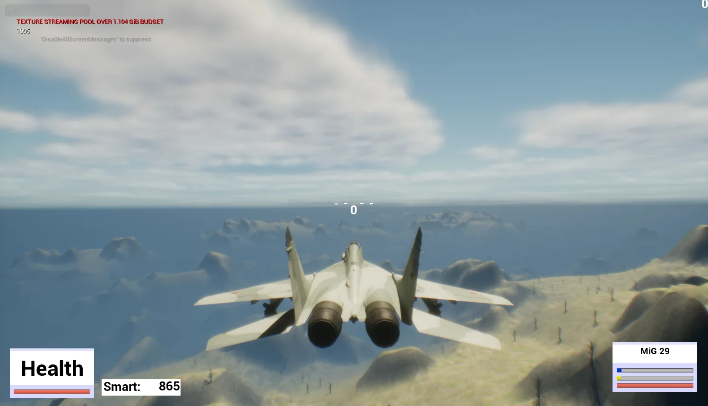
Kafkaesque GameA sprawling experiment in terrain, vehicles, building, and fracking. EvtestThe original game’s passcode-powered developer menu.
EvtestThe original game’s passcode-powered developer menu.
EXPLORE THE WIKI
World & lore
Places, stories, and the peculiar geography surrounding MMORP.
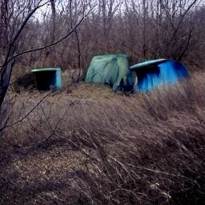
Derelict CampA not entirely welcoming camp at the heart of the lore.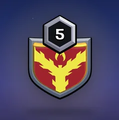
DarnaThe base of a clan with designs on the Derelict Camp. Joeltech ArchipelagoA volcanic island headquarters in the South Pacific.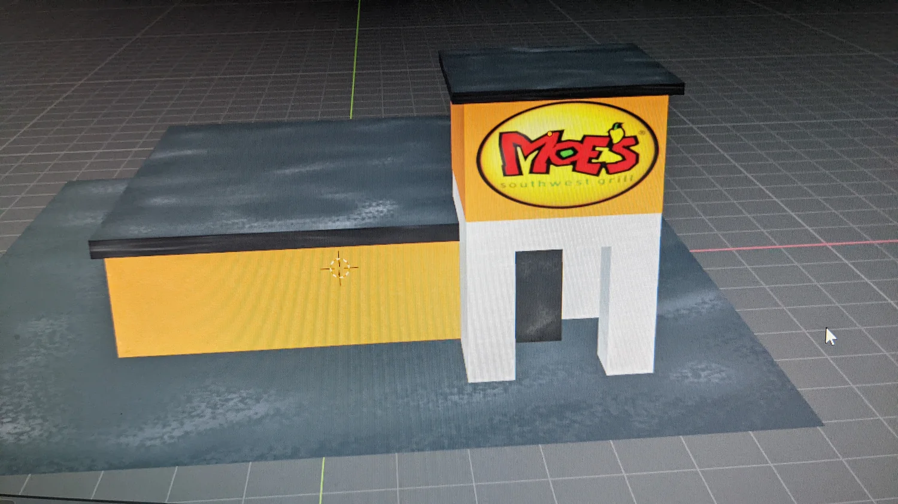
Mobile, AlabamaA celebrated destination, especially for one particular Moe’s.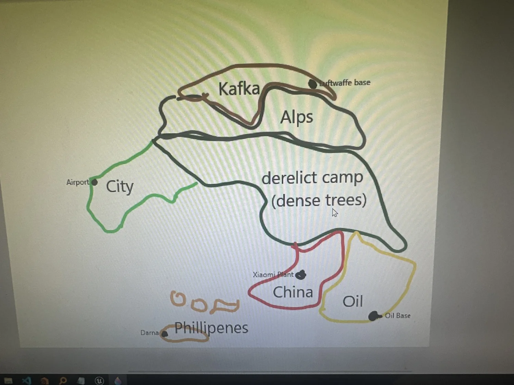
The German StoryMMORP, Orange Orange, a dangerous camp, and the search for Wi-Fi.EXPLORE THE WIKI
Joeltech
The company, its headquarters, and its extremely ambitious products.